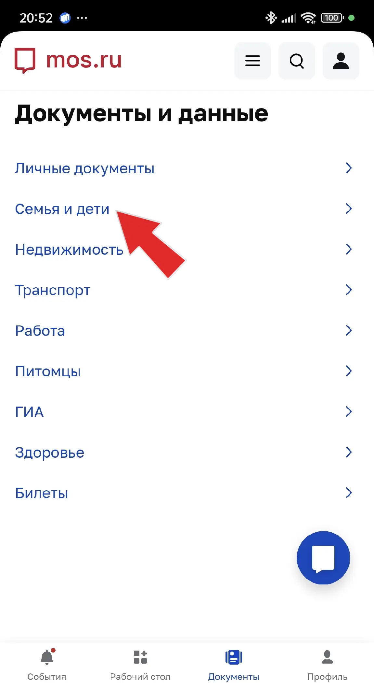

Войдите в магазин приложений App store
В строке поиска набрать "Мой id"
(Текст частично на русском, частично на английском. Большие буквы в ID недопустимы.)1
2
ВАЖНО!
Проверить, что на телефоне выбран регион "Россия". В противном случае приложение не найдётся.
Войдите в магазин приложений App store
В строке поиска набрать "Мой id"
(Текст частично на русском, частично на английском. Большие буквы в ID недопустимы.)Установите приложение

После установки запустить приложение.
Нажмите "Войти с MOS ID" и используйте свой личный логин и пароль от портала mos.ru
Этот же пароль вы используте для входа в дневник
На следующем этапе программа предложит вам установить 4х значный пин код для входа в приложение.
Вы можете установить, а можете пропустить. Это считается дополнительной защитой.На первом экране, после запуска прилоежния, необходимо перемстить ползунок СНИЛС вправо и нажать кнопку сохранить.
Дополнительно ничего выбирать нет необходимости, но если выбрали - оставьте.Автоматически вас перебросит на главный экран.
Необходимо нажать на кнопку "Биометрия"
В этом окне нажать кнопку "Управление биометрией"
Выполните повторную авторизацию на портале mos.ru
Если вам нет 18 - система выведет сообщение, что необходмо подтверждение родителя или законного предстиавителя.
Под текстом будет ссылка, нажмите на неё и удерживайте палец на экране несколько секунд.
В выпадающем списке нажмите поделиться и отправьте ссылку родителю.
Родитель должен подтвердить.

После подтверждения родителем, вернитесь на главный экран.
Воспользуйтесь кнопкой "Готово" или стрелочкой назад.
Повторно нажмите на кнопку "Биометрия"
Далее "Управление биометрией"
Снова пройдите авторизацию с помощью своего личного логина и пароля от портала mos.ru
Этот же пароль вы используте для входа в дневникТеперь вы окажетесь на страничке с регистрацией биометрии.
На снимке ниже, пример, того, как должен выглядить конечный результа, в вашем случае будет надпись "Не зарегистрировано"
Нажмите кнопку зарегистрировать.
Откроется окно в котором система попросит вас предоставить доступ к вашей камере. Разрешите.
Откроется окно в котором вы должны сделать своё селфи.
После регистрации вашей фотографии у вас должно получиться вот такой результат.
Внимание!
Приложение "Мой id" - не возможно найти в магазине Google play.
Приложение находится в магазине RuStore.
Скачать его можно здесь: rustore.ru
1. Выбрать раздел: "Приложения"
2. В строке поиска набрать: мой id
3. Установить приложение, как на картинке ниже.
После установки запустить приложение.
Нажмите "Войти с MOS ID" и используйте свой личный логин и пароль от портала mos.ru
Этот же пароль вы используте для входа в дневник
На первом экране, после запуска прилоежния, необходимо перемстить ползунок СНИЛС вправо и нажать кнопку сохранить.
Дополнительно ничего выбирать нет необходимости, но если выбрали - оставьте.
Программа предложит вам установить 4х значный пин код для входа в приложение.
Вы можете установить, а можете пропустить. Это считается дополнительной защитой.
Поссле ввода пинкода, программа автоматически перебросит вас на главный экран.
Необходимо нажать на кнопку "Биометрия"
Вас перебросит на следующее окно, где нужно нажать кнопку "Управление биометрией"

Потребуется повторная авторизация на портале mos.ru

Если вам нет 18 - система выведет сообщение, что необходмо подтверждение родителя или законного предстиавителя.
Под текстом будет ссылка, нажмите на неё и удерживайте палец на экране несколько секунд.
В выпадающем списке нажмите поделиться и отправьте ссылку родителю.
Родитель должен подтвердить.
После подтверждения родителем, вернитесь на главный экран.
Воспользуйтесь кнопкой "Готово" или стрелочкой назад.
Повторно нажмите на кнопку "Биометрия"
Далее "Управление биометрией"
Снова пройдите авторизацию с помощью своего личного логина и пароля от портала mos.ru
Этот же пароль вы используте для входа в дневникТеперь вы окажетесь на страничке с регистрацией биометрии.
На снимке ниже, пример, того, как должен выглядить конечный результа, в вашем случае будет надпись "Не зарегистрировано"
Нажмите кнопку зарегистрировать.

Откроется окно в котором вы должны сделать своё селфи.

После регистрации вашей фотографии у вас должно получиться вот такой результат.
Последний пункт.
Пожалуйста, отправьте скриншот.
(Пример снизу) на почту SolovevIV5@edu.mos.ru или в сферум, найдите меня, как Соловьве Игорь Вячеславович и отправьте в личку.
Возникла ошибка при регистрации согласия.
Пожалуйста, убедитесь, что:
И повторите попытку
Такой тип ошибки возникает, когда у родителя нет или не полностью заполнена информация о ребёнке.
Что нужно сделать:
Родителю, который будет подтверждать разрешение на биометрию, необходимо зайти на портал мэра москвы mos.ru
Авторизуйтесь под учётной записью родителя, который будет подтверждать биометрию.
Для входа, как правило, используется телефон в качестве логина, но может использоваться почта и СНИЛС и ваш личный пароль.
Если не помните пароль. Воспользуйтесь кнопкой восстановить пароль
Укажите телефон и вашу фамилию
Вам придёт код на телефон, послее вода кода, система прдложит создать новый пароль.
Если вы не помните, какой номер и почта используются для входа?
А так же если вы не уверены, что у вас вообще есть учётная запись?
Выполните следующее:
Если вы есть в системе, на экране вы увидите подсказки в виде телефона и электронной почты, которые привязаны к указанному СНИЛС.
Если ниаких данных не найдётся, значит необходимо зарегистрироваться на портале мэра москвы mos.ru
После успешной авторизации, вновь нажмите на иконку человечка в верхнем правом углу.
Откроется выпадающее окно.
Нажмите на ссылку Документы и данные.
После перехода на новую страницу нажмите на кнопку Документы.
Выберете раздел Семья и дети.
Обращаю ваше внимание!
Если никакой информации о ребёнке, для которого создаётся биометрическое разрешение, нет.
Необходимо нажать кнопку Добавить члена семьи и заполнить для него всю инфрмацию, которая будет описываться дальше.
Если ребёнок добавлен - нажмите посмотреть и редактировать и также сверяйтесь с инструкцией ниже.

В подсвеченной красным цветом области, отображается текущее состояние записи о ребёнке.
В этом разделе указывается родство.

Заполнить поля, как указано в бумажном свидительстве о рождении.
Данные по ЗАГС - заполняются один в один, как в вашем свидетельстве.
Никаких дополнений¸ но и упускать ничего не стоит.

Внимание!
Пример описанный здесь обязателен к заполнкению. Не пропускайте его.
Обязательно укажите дату составления актовой записи. Её можно найти на листке свидетельство о рождении.
Номер актовой записи, так же можно найти на листке. Он может быть двух, трёх значним, но после прохождения проверки превратится в 21-ти значный код. Это нормально. Ничего не меняйте.
Наименование органа выдавшего свидетельство необходимо выбрать из предоставленного списка. Никак иначе.
Список появится, как только вы введёте название ЗАГС из листка свидетельство о рождениию

Укажите СНИЛС
После прохождения весх проверок, личная карточка ребёнка получит 4 зелёных галочки.
Данные галочки говорят, что всё сделано правильно.
Если, какая либо из галочек не стоит, значит не выполнено одно из условий. Пройдитесь по списку ещё раз.

Сохраните введённые вами даные, нажав на кнопку сохранить.
Внимательно проверьте поставленные вами галочки.
Страница недоступна
По какой-то причине мы не можем сейчас отобразить эту страницу.
Этот вид ошибки возникает при попытке выдать разрешение на полчение биометри.
Означает, что сервер не смог выполнить ваш запрос.
Замечено, что чаще всего от этой ошибки страдают владельцы iPhone
1. Неообходимо проверить наличие интернета
2. Проверить не включен ли VPN
3. Проверить какой регион выбран в настройках. Зарубежные сервисы блокируют доступ к государственным сайтам России.
4. Воспользоваться браузером, который поддерживает российские сервисы. Yandex-браузер
5. Воспользоваться ноутбуком или компьютером.